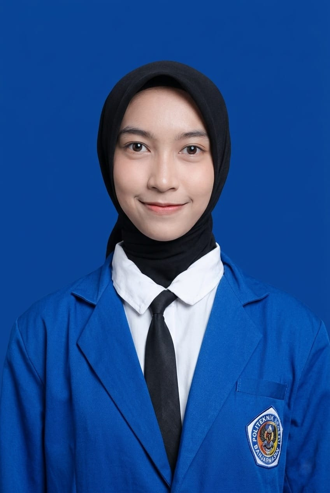

Solusi Transformasi Bisnis Digital Anda di Banjarmasin

NIM : E030425017
Prodi : Bisnis Digital
Kelas : 3C
Alamat : jl. bali, banjarmasin Tengah, Kalimantan Selatan
Email : kholidailmi16@gmail.com
No Telepon : 085198851615
Lulusan SMK jurusan Desain Komunikasi Visual dengan pengalaman praktik kerja lapangan di bidang desain. Memiliki keterampilan dalam beradaptasi dengan cepat, komunikasi yang baik dalam memberikan pelayanan, menguasai prinsip desain grafis. Termotivasi untuk terus berkembang dan berkontribusi di industri kreatif maupun layanan yang terkait desain.
Jurusan : Administrasi Bisnis
Prodi : Bisnis Digital
Jurusan : Desain Komunikasi Visual
Melayani pelanggan, mengolah desain undangan sesuai kebutuhan, menangani proses pencetakan hingga finishing, serta melakukan packing produk sampai siap diambil pelanggan.
Memberikan pelayanan kepada klien untuk membuat kemasan produk, mengolah Desain Kemasan sesuai kebutuhan klien serta Membuat dan memproses Pembuatan Kemasan
Melayani dan berkomunikasi baik dengan klien secara virtual, Memberikan layanan pembuat desain powerpoint (ppt), Poster, Tracing Logo, Desain Piala kelulusan